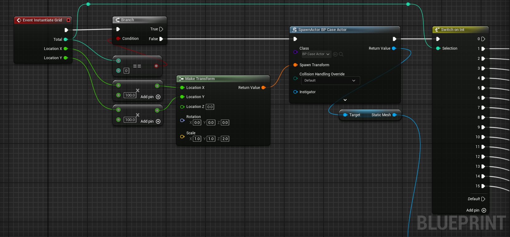

About this project

This project was part of an assignment that I did in my first term of my Masters'. The assignment required me to make a game mechanic in Unity and Unreal and then compare the tools and practices that I utilised across the different engines. I chose PCG as my focus as I have a prior interest in PCG and prior experience. I wanted to push myself to learn and expand my knowledge in the area, along with gaining more experience with using C++ in UE5.
The player is able to input the width, height, iteration count, and the density into the widget and generate a map based on these parameters. The player can proceed through this process as many times as they wish. As a bonus feature, the player is able to choose to manoever around the map that they just created. To give incentive to expore the whole map, a number of pickups are spawned and randomly distrubuted around the map.
My Work within the Project
As previously mentioned, I primarily used C++ to achieve this project. I have used Cellular Automata previously in both C# and Blueprints, so this part of the development was not new at all. This allowed me to focus on the implementation in C++ itself, which was not too different to C#. I learnt a lot about spawning actors, making BlueprintCallable functions, BlueprintImplementableEvent functions, making 2D arrays with TArrays, plus so many more smaller things.
To push my knowledge in PCG futher, I learnt how to implement the Marching Sqaures algorithm to make my dungeon more smooth and clean. While definitely not the most efficient, I used a BlueprintImplementableEvent for spawning the static meshes of each case of the Marching Square algorithm. I did this to prevent needing to define 15 different static meshes in the script, when I could instead drag and drop them into the blueprint itself.
To ensure the player could manoever around the whole map, I identified regions throughout the map and created corridors between them until there was only one region, meaning that everywhere was accessible. I connected the rooms by using the gradient of a line between two tiles to calculate each tile along the line, and set it to empty. This allowed for the corridors to be generated pretty effectively. Sometimes the map spawns with random long corridors that don't actually attach to anything, but in hindsight, this imitates long dead ends that are often found in caves and dungeons.
void AMapGenerator::ConnectRooms(FVector2D startCoord, FVector2D endCoord)
{
float dx = endCoord.X - startCoord.X;
float dy = endCoord.Y - startCoord.Y;
float gradientOfLine = dy / dx;
float c = endCoord.Y - (gradientOfLine * endCoord.X);
if (startCoord.X == endCoord.X)
{
for (int i = startCoord.Y; i <= endCoord.Y; i++)
{
grid[startCoord.X][i] = 0;
}
}
else if (startCoord.Y == endCoord.Y)
{
for (int i = startCoord.X; i <= endCoord.X; i++)
{
grid[i][startCoord.Y] = 0;
}
}
else
{
for (int i = startCoord.X; i <= endCoord.X; i++)
{
int x = i;
float y = (gradientOfLine * x) + c;
y = FMath::RoundToInt(y);
if (!isnan(y))
{
for (int j = x - 1; j <= x + 1; j++)
{
for (int k = y - 1; k <= y + 1; k++)
{
grid[j][k] = 0;
}
}
}
}
}
} Future Improvements
While I am overall very happy with my work on this project, there will always be something that can be improved or worked upon. For this project, my biggest improvement would be instantiating the static meshes through the C++ class instead of using a BlueprintImplementableEvent. This would increase the efficiency of the project, which would definitely help the generation times with the larger maps. Perhaps a method of preventing multiple meshes needed to be defined individually in the header file would be to add each static mesh to an array which could then be easily called depending on the case of each tile.
